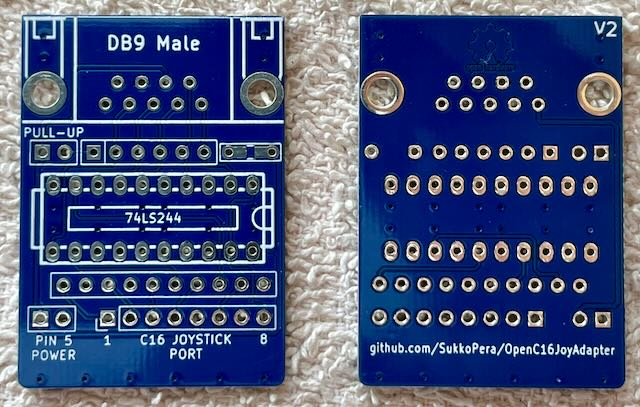
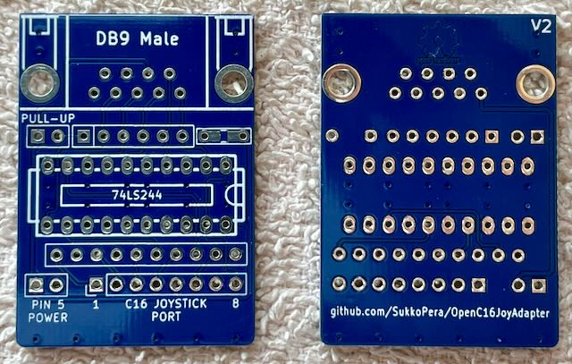
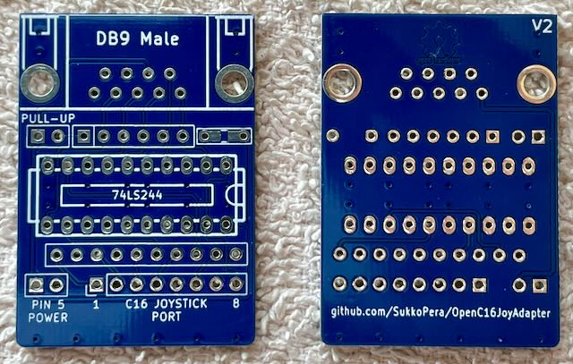

Mit diesem Adapter kann man Atari/C64 kompatible Joysticks am C16 und Plus/4 betreiben. Zum unterschied von billigen passiven Adaptern, reicht er GND/+5V an den Joystick weiter.
Projekt-Homepage • Interakiver Bestückungsplan

| Komponente | Anzahl | Preis | Anbieter |
| Platine | 1 | €1.00 | |
| 100nF Kondensator | 1 | €0.03 | Reichelt |
| 74LS244 | 1 | €1.01 | Reichelt |
| 20-Pin Sockel, schmal | 1 | €0.30 | Reichelt |
| 10-5 100Ω Widerstandnetzwerk | 1 | €0.05 | Reichelt |
| 6-5 10kΩ Widerstandnetzwerk | 1 | €0.07 | Reichelt |
| 1x2 Stiftleiste | 2 | €0.08 | Reichelt |
| Jumper | 2 | €0.06 | Reichelt |
| 90° D-Sub-9 Stecker | 1 | €0.36 | Reichelt |
| 8 poliges Kabel, 1m | 0.2 | €0.23 | Reichelt |
| Mini-DIN-8 Stecker | 1 | €1.41 | Reichelt |
| nur Platine | €1.00 | ||
| Bausatz | €4.60 |